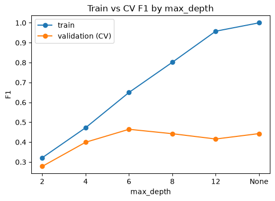

[8장] 모델 성능 개선: 교차 검증, 격자 탐색, 변수 중요도
비즈니스빅데이터분석
8장
모델 성능 개선: 교차 검증, 격자 탐색, 변수 중요도
2027학년도 「비즈니스빅데이터분석」의 준비 중인 교재입니다. 편집 상태를 검토하기 위해 미리 공개한 것으로, 수업 전에 내용과 순서가 바뀔 수 있습니다.
학사 10주차 · 교재 08 · 3부 AI 모델링 · 출제 분야: AI 모델링 > 모델 성능 개선 및 그래픽 출력
AICE Associate의 AI 모델링 문항은 모델을 한 번 학습시키고 끝나지 않는다. 가이드가 하이퍼파라미터의 후보와 교차 검증의 횟수를 주고 격자 탐색으로 가장 나은 설정을 찾게 하거나, 찾은 최적 모델로 검증용 데이터를 예측하게 하거나, 변수 중요도를 정렬하여 막대그래프로 그리게 한다. 이어서 “중요도가 가장 큰 열의 이름”이나 “최적의 max_depth”를 답 변수에 저장하게 한다. 이 문항들은 한 문항 안에서 탐색, 추출, 예측, 그래프가 이어지므로 앞 단계의 작은 실수가 같은 문항의 뒤 단계를 모두 틀리게 만든다.
본 장은 교차 검증(cross_val_score, KFold, StratifiedKFold), 격자 탐색(GridSearchCV)의 탐색 범위와 평가 기준, 최적 설정과 최적 모델의 추출, 훈련 점수와 검증 점수로 과대적합을 확인하는 방법, 변수 중요도의 표와 막대그래프를 다룬다. 7장의 분류용 훈련·검증 데이터와 랜덤 포레스트를 이어서 쓰며, 7장의 끝에서 확인한 문제(이탈 비율이 19.5%여서 정확도만으로는 모델을 판단할 수 없다)를 평가 기준의 선택으로 다시 다룬다.
학습 목표
- 교차 검증의 절차를 설명하고,
cross_val_score로 겹마다의 점수와 평균을 구한다. KFold와StratifiedKFold의 차이를 설명하고, 분류 문제에서 층화한 겹을 사용한다.- 탐색 범위를 딕셔너리로 작성하고,
GridSearchCV의param_grid,scoring,cv인자를 가이드대로 지정한다. best_params_,best_score_,best_estimator_로 최적 설정과 최적 모델을 추출하고, 최적 모델로 검증용 데이터를 평가한다.- 훈련 점수와 검증 점수의 차이로 과대적합을 확인하고,
cv_results_를 표로 읽는다. feature_importances_를 열 이름과 함께 정렬하여 표와 막대그래프로 작성하고, 가장 중요한 열의 이름을 답 변수에 저장한다.
준비 사항
| 항목 | 내용 |
|---|---|
| 실습 노트북 | AICE_08장_실습_학생용.ipynb |
| 자료 | customers.csv(학기 공통 자료), loans.csv(시간 제한 문항용). 둘 다 kit/data/AICE_공통/에 있다 |
| 앞 장과의 연계 | 7장의 분류용 층화 분할(X_train 2352행, X_valid 588행, 입력 24열), 의사결정나무와 랜덤 포레스트, F1과 class_weight |
| 앞 과목과의 연계 | 「빅데이터 개론」 10장(교차 검증과 과대적합의 의미), 「파이썬 기초」 10장(딕셔너리) |
| 실습 환경 | 접속과 설치는 부록 A를 따른다 |
0. 실습 준비
본 장은 7장의 분류용 훈련·검증 데이터에서 시작한다. 실습 노트북의 첫 코드 셀이 3장, 4장, 7장의 처리를 다시 실행하므로 7장의 노트북을 열어 둘 필요가 없다. 아래 네 단계를 마친 뒤 1절로 넘어간다. 접속과 설치의 방법은 부록 A에 있다.
0-1. 노트북 열기
- 실습 환경에 접속하여
AICE_08장_실습_학생용.ipynb를 연다. - 커널을 다시 시작하고 모든 출력을 지운다.
- 첫 설명 셀의 마지막 문단을 읽는다. 격자 탐색은 모델을 여러 번 학습시키므로 셀 하나에 수십 초가 걸릴 수 있다. 실행 중인 셀은 왼쪽에
[*]가 표시되고, 끝나면 번호로 바뀐다.[*]인 동안 다음 셀을 실행하면 그 셀은 앞 셀이 끝날 때까지 기다린다.
[그림 자리: 실행 중인 셀의 별표 표시와 끝난 셀의 번호] 격자 탐색 셀을 실행한 직후(
[*])와 끝난 뒤([12]같은 번호)의 셀 왼쪽을 나란히 보인 화면. 커널 상태 표시(오른쪽 위의 원)가 채워진 상태와 빈 상태도 함께 표시한다. 학교 실습 환경의 JupyterLab에서 2부 단계 3을 실행하며 찍는다.
0-2. 첫 코드 셀의 실행
첫 코드 셀은 3장(정제), 4장(인코딩), 7장(분류용 층화 분할과 스케일링)의 처리를 그대로 재현하고, 두 입력의 크기와 두 목표의 이탈 비율을 출력한다.
(2352, 24) (588, 24) 0.195 0.196훈련용 2,352행과 검증용 588행이고, 두 데이터의 이탈 비율은 각각 0.195와 0.196이다. 7장의 1.2절과 같은 값이다.
- 확인 1 출력이
(2352, 24) (588, 24) 0.195 0.196이다.
0-3. 판과 입력의 자료형
# [예제 1]
import sklearn
print(sklearn.__version__)
print(type(X_train).__name__, type(X_train_s).__name__)1.9.1
DataFrame ndarray첫 줄은 scikit-learn의 판이다. 둘째 줄은 X_train이 데이터프레임(열 이름이 있다)이고 X_train_s가 넘파이 배열(열 이름이 없다)이라는 뜻이다. 본 장의 나무 모델은 모두 스케일링하지 않은 X_train, X_valid로 학습한다. 나무 모델은 값의 크기 순서로 분할 기준을 찾으므로 스케일링의 영향을 받지 않고, 데이터프레임인 X_train은 열 이름을 가지고 있어 5절의 변수 중요도를 읽기 쉽다. 스케일링한 X_train_s는 계수를 쓰는 로지스틱 회귀에만 쓴다(연습 1).
- 확인 2 둘째 줄이
DataFrame ndarray이다.
[최신 자료 자리: 시험 환경의 자원과 라이브러리의 판] 시험 환경의 CPU 코어 수와 메모리, 설치된 scikit-learn의 판. 확인할 곳은 AICE 공식 사이트의 Associate 안내(https://aice.study/info/aice/asso)와 수험자 가이드, 사전 환경점검 화면. 설계안 §1-2에 적은 값은 수험자 가이드의 “CPU 2 Core, Memory 16G”이다(2026-11-13 확인). 이 교재의 출력은 scikit-learn 1.9.1에서 얻었다(2026-11-15). 수업 전에 다시 확인한다.
0-4. 앞 장의 되짚기
7장에서 남은 것은 세 가지이다. 첫째, 검증용 데이터 한 번의 점수로 모델을 비교하였다. 둘째, 하이퍼파라미터(max_depth, class_weight)를 가이드가 준 값 하나로만 썼다. 셋째, 이탈 비율 19.5%의 자료에서는 정확도보다 F1이 모델의 차이를 잘 드러낸다. 본 장은 첫째를 교차 검증으로, 둘째를 격자 탐색으로 해결하고, 셋째를 평가 기준(scoring="f1")으로 반영한다.
| 7장의 방식 | 본 장의 방식 | 절 |
|---|---|---|
| 검증용 588행으로 한 번 평가 | 훈련용 안에서 5겹 교차 검증, 점수 5개의 평균 | 1 |
| 하이퍼파라미터를 하나만 지정 | 후보의 모든 조합을 교차 검증으로 비교 | 2, 3 |
| 정확도와 F1을 함께 계산 | scoring으로 고르는 기준을 하나로 지정 |
2.4 |
| 지표만 비교 | 훈련 점수와 검증 점수의 차이, 변수 중요도 | 4, 5 |
- 확인 3 노트북에서
X_train.shape를 실행하면(2352, 24)이고,X_train_s.shape도 같다.
1. 교차 검증
1.1 한 번의 검증이 가진 한계
7장까지는 훈련용 데이터로 학습하고 검증용 데이터로 한 번 평가하였다. 이 방식은 간단하지만 점수가 검증용 데이터에 어떤 행이 들어갔는가에 따라 달라진다. 검증용 데이터가 588행이고 그 가운데 이탈 회원은 115명 정도이므로, 몇 명의 예측이 맞고 틀림에 따라 F1이 크게 움직인다. 이 점수로 하이퍼파라미터를 여러 번 바꾸어 가며 고르면, 그 검증용 데이터에 우연히 잘 맞는 설정을 고르게 되어 검증용 데이터가 처음 보는 데이터의 역할을 하지 못한다.
교차 검증(cross-validation)은 훈련용 데이터를 k개의 부분(겹, fold)으로 나누고, 한 겹을 검증에, 나머지 k-1겹을 학습에 쓰는 일을 k번 반복한다. 겹마다 점수가 하나씩 나오므로 k개의 점수를 얻고, 그 평균을 설정의 성능으로 본다. 모든 행이 한 번씩 검증에 쓰이므로 한 번의 분할에 의존하지 않는다. scikit-learn의 사용자 안내서는 교차 검증을 쓰면 별도의 검증 세트가 필요 없지만 최종 평가를 위한 데이터는 따로 떼어 두어야 한다고 설명한다. 본 과목에서는 훈련용 데이터 안에서 교차 검증을 하고, 처음에 떼어 둔 검증용 데이터(X_valid)는 최종 평가에만 쓴다.
작은 예: 10행의 5겹
행 번호 0~9의 열 행을 5겹으로 나누면 겹마다 2행이 검증에, 8행이 학습에 쓰인다. KFold의 split은 겹마다 학습용 행 번호와 검증용 행 번호를 돌려준다.
# [예제 2]
import numpy as np
from sklearn.model_selection import KFold
rows10 = np.arange(10)
for train_idx, valid_idx in KFold(n_splits=5).split(rows10):
print(train_idx, valid_idx)[2 3 4 5 6 7 8 9] [0 1]
[0 1 4 5 6 7 8 9] [2 3]
[0 1 2 3 6 7 8 9] [4 5]
[0 1 2 3 4 5 8 9] [6 7]
[0 1 2 3 4 5 6 7] [8 9]각 줄의 왼쪽이 학습용 행 번호, 오른쪽이 검증용 행 번호이다. 다섯 줄의 오른쪽을 모으면 0~9가 한 번씩 나온다. 모든 행이 정확히 한 번 검증에 쓰이고, 네 번 학습에 쓰인다는 뜻이다. 섞지 않았으므로 앞에서부터 두 행씩 차례로 검증 겹이 된다.
[그림 자리: 5겹 교차 검증의 나눔] 가로로 긴 막대 하나(훈련용 2,352행)를 다섯 칸(471, 471, 470, 470, 470행)으로 나누고, 아래로 다섯 줄을 그려 줄마다 한 칸(검증 겹)을 진한 색으로, 나머지 네 칸(학습 겹)을 옅은 색으로 칠한 도식. 줄 오른쪽에 그 줄의 F1(0.479, 0.5091, 0.4521, 0.3759, 0.3862)을 적고 맨 아래에 평균 0.4405를 적는다. 막대의 오른쪽 바깥에 떼어 둔 검증용 588행(교차 검증에 쓰지 않음)을 따로 그린다. 도식 도구로 그린다.
훈련용 2,352행의 5겹
같은 나눔을 훈련용 데이터에 적용하고, 겹마다 학습과 검증의 행 수와 검증 겹의 이탈 회원 수를 표로 만든다. 분류 문제이므로 층화한 겹(StratifiedKFold, 1.3절)을 쓴다.
# [예제 3]
from sklearn.model_selection import StratifiedKFold
rows = []
fold = 0
for train_idx, valid_idx in StratifiedKFold(n_splits=5).split(X_train, y_train):
fold = fold + 1
rows.append([fold, len(train_idx), len(valid_idx), y_train.iloc[valid_idx].sum()])
fold_table = pd.DataFrame(rows, columns=["fold", "n_train", "n_valid", "n_churn_valid"])
fold_table fold n_train n_valid n_churn_valid
0 1 1881 471 92
1 2 1881 471 92
2 3 1882 470 92
3 4 1882 470 91
4 5 1882 470 91손으로 계산하면 다음과 같다. 2,352를 5로 나누면 몫이 470, 나머지가 2이다. scikit-learn의 KFold 문서는 앞의 (행 수를 겹 수로 나눈 나머지)개의 겹이 한 행씩 더 갖는다고 설명한다. 따라서 앞의 두 겹이 471행, 나머지 세 겹이 470행이고, 학습에 쓰이는 행은 각각 2352 - 471 = 1881, 2352 - 470 = 1882이다. 이탈 회원 458명은 층화에 따라 겹마다 458 / 5 = 91.6명꼴로 나뉘어 92, 92, 92, 91, 91명이 되었다(합 458).
결과 읽기
| 묻는 것 | 읽는 자리 | 이 출력의 값 |
|---|---|---|
| 겹의 수 | 표의 행 수 | 5 |
| 검증 겹의 크기 | n_valid |
471, 471, 470, 470, 470 |
| 학습 겹의 크기 | n_train |
1881 또는 1882 |
| 모든 행이 한 번씩 검증에 쓰였는가 | n_valid의 합 |
2352 |
| 검증 겹의 이탈 비율 | n_churn_valid / n_valid |
92 / 471 = 0.195 등 |
- 확인 4 예제 2의 다섯 줄 오른쪽이
[0 1],[2 3],[4 5],[6 7],[8 9]이고, 예제 3의n_valid가471, 471, 470, 470, 470이다.
1.2 cross_val_score
# [예제 4]
from sklearn.model_selection import cross_val_score
from sklearn.tree import DecisionTreeClassifier
tree = DecisionTreeClassifier(max_depth=5, random_state=42)
scores = cross_val_score(tree, X_train, y_train, cv=5)
print(scores.round(4))
print(scores.mean().round(4))[0.8153 0.828 0.8298 0.8234 0.8106]
0.8214cross_val_score(모델, 입력, 목표, cv=겹의 수)는 모델을 겹의 수만큼 학습시키고 평가하여 점수의 배열을 돌려준다. 배열의 길이는 겹의 수와 같다. 넘겨준 모델 객체 자체는 학습되지 않는다. 함수가 모델을 복제하여 겹마다 새로 학습시키기 때문이다. 따라서 cross_val_score를 실행한 뒤에 tree.predict(...)를 호출하면 학습되지 않은 모델이라는 오류가 난다. 예측에 쓸 모델은 따로 fit해야 한다.
# [예제 7]
tree.predict(X_valid)NotFittedError: This DecisionTreeClassifier instance is not fitted yet. Call 'fit' with appropriate arguments before using this estimator.| 인자 | 뜻 | 기본값 |
|---|---|---|
estimator |
평가할 모델 객체 | (필수) |
X, y |
입력과 목표. 본 과목에서는 X_train, y_train |
(필수) |
cv |
겹의 수 또는 분할 객체 | None(5겹) |
scoring |
평가 기준의 이름 | None(모델의 기본 점수. 분류 모델은 정확도) |
출력의 첫 줄은 겹 다섯 개의 정확도이고 둘째 줄은 그 평균(0.8214)이다. scoring을 지정하지 않았으므로 분류 모델의 기본 점수인 정확도가 계산되었다. 이 자료는 이탈 비율이 19.5%이므로 정확도는 7장에서 본 것처럼 모델의 차이를 잘 드러내지 못한다. 평가 기준을 F1로 바꾸려면 scoring="f1"을 지정한다.
# [예제 5]
scores_f1 = cross_val_score(tree, X_train, y_train, cv=5, scoring="f1")
print(scores_f1.round(4))
print(scores_f1.mean().round(4), scores_f1.std().round(4))[0.479 0.5091 0.4521 0.3759 0.3862]
0.4405 0.0518같은 모델인데 겹에 따라 F1이 0.3759에서 0.5091까지 달라진다. 표준편차는 0.0518이다. 1.1절에서 말한 “한 번의 검증 점수는 어떤 행이 들어갔는가에 따라 달라진다”는 것이 이 출력에 그대로 드러난다. 다섯 점수의 평균 0.4405가 한 번의 점수보다 믿을 만한 까닭이다.
점수 다섯 개의 읽기
평균과 표준편차를 손으로 계산한다. 다섯 점수의 합은 0.479 + 0.5091 + 0.4521 + 0.3759 + 0.3862 = 2.2023이고, 5로 나누면 0.4405이다. 평균과의 차이는 0.0385, 0.0686, 0.0116, -0.0646, -0.0543이고, 그 제곱의 합은 약 0.01344이다. 이것을 5로 나눈 뒤 제곱근을 구하면 0.0518, 4로 나눈 뒤 제곱근을 구하면 0.058이다.
# [예제 6]
s = scores_f1
print(round(s.sum() / len(s), 4), round(s.mean(), 4))
print(round(np.sqrt(((s - s.mean()) ** 2).mean()), 4), round(s.std(), 4))
print(round(pd.Series(s).std(), 4))0.4405 0.4405
0.0518 0.0518
0.058첫 줄은 합을 개수로 나눈 값과 mean()이 같음을, 둘째 줄은 제곱 편차의 평균의 제곱근과 넘파이의 std()가 같음을 보인다. 셋째 줄의 0.058은 판다스 시리즈의 std()이다. 넘파이의 std()는 기본적으로 개수(5)로 나누고, 판다스의 std()는 개수 - 1(4)로 나누기 때문에 값이 다르다. 가이드가 “점수의 표준편차”를 요구하면 scores.std()(넘파이 배열의 메서드)를 쓰는 것이 보통이며, GridSearchCV의 std_test_score도 넘파이와 같은 방식으로 계산된다(3.4절).
| 묻는 것 | 읽는 자리 | 이 출력의 값 | 판단 |
|---|---|---|---|
| 설정의 성능 | 다섯 점수의 평균 | 0.4405 | 두 설정을 비교할 때 이 값을 쓴다 |
| 점수의 흔들림 | 표준편차 | 0.0518 | 평균의 차이가 이보다 작으면 우열을 단정하기 어렵다 |
| 가장 나쁜 겹 | 최솟값 | 0.3759(넷째 겹) | 특정 겹에서 크게 낮으면 그 겹의 자료를 살핀다 |
| 가장 좋은 겹 | 최댓값 | 0.5091(둘째 겹) | 한 번의 검증이었다면 이 값이 나올 수도 있었다 |
- 확인 5 예제 5의 둘째 줄이
0.4405 0.0518이고, 예제 6의 셋째 줄이0.058이다.
scoring에 쓰는 이름은 문자열이며, 자주 쓰는 것은 다음과 같다. 이름의 전체 목록은 scikit-learn 사용자 안내서의 「Metrics and scoring」에 있다.
| 문제 | scoring 값 |
뜻 |
|---|---|---|
| 분류 | "accuracy" |
정확도 |
| 분류 | "precision", "recall", "f1" |
정밀도, 재현율, F1(이진 분류의 양성 범주 기준) |
| 분류 | "roc_auc" |
ROC 곡선 아래 면적 |
| 회귀 | "neg_mean_absolute_error", "neg_mean_squared_error" |
MAE, MSE에 음수를 붙인 값 |
| 회귀 | "r2" |
결정 계수 |
회귀의 오차 지표에 neg_가 붙는 이유는 평가 기준이 “클수록 좋은 값”으로 통일되어 있기 때문이다. 점수가 음수로 나와도 오류가 아니며, MAE로 읽으려면 부호를 바꾼다.
훈련 점수도 함께 보기 [선택]
cross_validate는 cross_val_score와 같은 나눔으로 학습하되, 결과를 딕셔너리로 돌려주고 학습 겹의 점수와 걸린 시간도 담을 수 있다.
# [예제 10]
from sklearn.model_selection import cross_validate
cv_out = cross_validate(tree, X_train, y_train, cv=5, scoring="f1", return_train_score=True)
print(sorted(cv_out.keys()))
print(cv_out["train_score"].round(4))
print(cv_out["test_score"].round(4))['fit_time', 'score_time', 'test_score', 'train_score']
[0.5877 0.6134 0.5417 0.5939 0.5967]
[0.479 0.5091 0.4521 0.3759 0.3862]키는 fit_time(겹마다의 학습 시간), score_time(평가 시간), test_score(검증 겹의 점수), train_score(학습 겹의 점수)이다. test_score는 예제 5의 다섯 점수와 같다. 같은 겹에서 학습 겹의 F1(0.5417~0.6134)이 검증 겹의 F1(0.3759~0.5091)보다 높다. 학습에 쓴 행을 다시 평가하면 점수가 높게 나오며, 그 차이가 얼마나 큰가가 4절의 과대적합 판단의 근거가 된다.
1.3 KFold와 StratifiedKFold
cv에 정수 대신 분할 객체를 넘기면 겹을 나누는 방식을 직접 정할 수 있다. KFold는 행의 순서대로 k개로 자르고, StratifiedKFold는 겹마다 목표 범주의 비율이 전체와 같도록 나눈다. 7장 1.2절의 stratify 인자와 같은 생각이다. 아래 셀은 두 방식으로 나눈 다섯 겹에서, 검증에 쓰는 겹의 행 수와 이탈 비율을 출력한다. split 메서드는 겹마다 학습용 행 번호와 검증용 행 번호를 돌려준다.
# [예제 8]
from sklearn.model_selection import KFold, StratifiedKFold
kf = KFold(n_splits=5)
skf = StratifiedKFold(n_splits=5)
for train_idx, valid_idx in kf.split(X_train, y_train):
print("KFold ", len(valid_idx), round(y_train.iloc[valid_idx].mean(), 3))
for train_idx, valid_idx in skf.split(X_train, y_train):
print("StratifiedKFold", len(valid_idx), round(y_train.iloc[valid_idx].mean(), 3))KFold 471 0.206
KFold 471 0.17
KFold 470 0.198
KFold 470 0.194
KFold 470 0.206
StratifiedKFold 471 0.195
StratifiedKFold 471 0.195
StratifiedKFold 470 0.196
StratifiedKFold 470 0.194
StratifiedKFold 470 0.194KFold로 나눈 겹은 이탈 비율이 0.17에서 0.206까지 흩어진다. StratifiedKFold의 겹은 모두 0.194~0.196으로 훈련용 전체의 비율(0.195)과 거의 같다. 범주의 비율이 겹마다 다르면 F1처럼 양성 범주에 의존하는 지표가 겹에 따라 더 크게 흔들린다. 두 분할 객체의 주요 인자와 기본값은 같다(n_splits=5, shuffle=False, random_state=None).
공식 문서에 따르면 cv에 정수를 넘기거나 아무것도 넘기지 않았을 때, 모델이 분류 모델이고 목표가 이진 또는 다중 범주이면 StratifiedKFold가 쓰이고, 그 밖의 경우(회귀 모델)에는 KFold가 쓰인다. 이때 섞기(shuffle)는 하지 않는다. 즉 1.2절의 cv=5는 이미 층화한 5겹이었다. 예제 3의 표(층화한 5겹)의 검증 겹이 예제 5의 다섯 점수를 만든 겹과 같은 까닭이다. 행을 섞어서 나누고 싶으면 분할 객체를 직접 만들어 shuffle=True와 random_state를 함께 지정한다. random_state는 shuffle=True일 때에만 효과가 있다.
# [예제 9]
skf5 = StratifiedKFold(n_splits=5, shuffle=True, random_state=42)
scores_skf = cross_val_score(tree, X_train, y_train, cv=skf5, scoring="f1")
print(scores_skf.round(4))
print(scores_skf.mean().round(4))[0.4459 0.4925 0.4785 0.4225 0.4559]
0.4591섞어서 나누었으므로 겹의 구성이 달라져 평균 F1이 0.4591로 1.2절(0.4405)과 다르다. 시험의 가이드가 “StratifiedKFold로 5겹, 섞기, 난수 시드 42”처럼 분할 방식을 정하면 이 셀의 형식으로 작성한다. 가이드가 cv=5만 주면 정수를 그대로 넘긴다.
cv에 넘기는 값 |
분류 모델에서의 겹 나누기 | 섞기 | 이 절의 평균 F1 |
|---|---|---|---|
5(정수) 또는 생략 |
StratifiedKFold(n_splits=5)와 같다 |
하지 않는다 | 0.4405(1.2) |
StratifiedKFold(n_splits=5) |
층화한 5겹 | 하지 않는다 | 0.4405(정수와 같다) |
StratifiedKFold(n_splits=5, shuffle=True, random_state=42) |
층화한 5겹 | 시드 42로 섞는다 | 0.4591(1.4) |
KFold(n_splits=5) |
행의 순서대로 5겹. 층화하지 않는다 | 하지 않는다 | (연습 2는 섞은 KFold의 정확도) |
같은 모델이라도 cv에 무엇을 넘기는가에 따라 점수가 달라진다. 가이드가 기준 값을 정한 문항에서는 분할 방식을 가이드와 글자 그대로 맞추어야 같은 값이 나온다.
- 확인 6 예제 8의
KFold다섯 줄의 이탈 비율 가운데0.17이 있고,StratifiedKFold다섯 줄은 모두 0.194~0.196이다. 예제 9의 평균이0.4591이다.
흔한 오류
| 증상 | 실제 메시지(핵심 구절) | 원인 | 대처 |
|---|---|---|---|
| 교차 검증 뒤 예측에서 오류 | NotFittedError: This DecisionTreeClassifier instance is not fitted yet |
cross_val_score는 넘긴 모델을 학습시키지 않는다 |
예측할 모델은 따로 fit한다. 격자 탐색이면 best_estimator_ |
| 평균이 가이드의 기준 값과 다르다 | (메시지 없음) | scoring을 빠뜨려 정확도가 계산되었다 |
scoring="f1" 등 가이드의 이름 |
| 섞은 겹의 결과가 실행마다 다르다 | (메시지 없음) | shuffle=True에 random_state를 주지 않았다 |
random_state=42 |
| 표준편차가 가이드의 값과 셋째 자리에서 다르다 | (메시지 없음) | 판다스 std()(개수 - 1로 나눔)를 썼다 |
넘파이 배열의 std() |
노트북 1부의 연습 1(로지스틱 회귀의 교차 검증), 연습 2(KFold), 연습 3([선택], 겹의 수)을 푼다.
2. 탐색 범위의 딕셔너리와 평가 기준
2.1 하이퍼파라미터와 격자 탐색
하이퍼파라미터는 모델을 만들 때 사람이 정하는 설정이다. 6~7장의 max_depth, n_estimators, min_samples_leaf, class_weight가 그 예이다. 학습으로 정해지는 값(나무의 분할 기준, 회귀 계수)과 달리 하이퍼파라미터는 데이터가 정해 주지 않으므로, 후보를 여러 개 두고 성능을 비교하여 고른다.
격자 탐색(grid search, GridSearchCV)은 하이퍼파라미터마다 후보 값의 목록을 주면, 모든 조합을 빠짐없이 만들어 조합마다 교차 검증 점수를 계산하고 가장 높은 조합을 고르는 방법이다. 후보의 조합이 바둑판의 칸처럼 펼쳐지므로 격자라고 부른다.
[그림 자리: 격자 탐색의 흐름] 왼쪽에 탐색 범위(
max_depth4개 ×min_samples_leaf2개)를 4행 2열의 격자로 그리고, 칸마다 “5겹 교차 검증 → 평균 F1”의 작은 상자를 붙인다. 가운데에 가장 높은 칸(max_depth=None,min_samples_leaf=10, 평균 0.45)을 강조하고, 오른쪽으로 “최적 설정으로 훈련용 2,352행 전체에 다시 학습(refit) →best_estimator_”를 화살표로 잇는다. 맨 오른쪽에 “검증용 588행으로 한 번 평가 → F1 0.5”를 둔다. 격자 탐색이 검증용 데이터를 쓰지 않는다는 것을 점선의 경계로 표시한다. 도식 도구로 그린다.
2.2 param_grid: 탐색 범위의 딕셔너리
탐색 범위는 딕셔너리로 쓴다. 키는 하이퍼파라미터의 이름(모델 생성 시의 인자 이름과 같은 문자열)이고, 값은 후보의 리스트이다.
# [예제 11]
from sklearn.model_selection import GridSearchCV
param_grid = {"max_depth": [3, 5, 7, None], "min_samples_leaf": [1, 10]}
gs = GridSearchCV(DecisionTreeClassifier(random_state=42), param_grid, scoring="f1", cv=5)
gs.fit(X_train, y_train)
print(len(gs.cv_results_["params"]))8max_depth의 후보 4개와 min_samples_leaf의 후보 2개를 곱하여 조합은 8개이다. cv_results_["params"]의 길이가 그 수를 보여 준다. 조합마다 5겹 교차 검증을 하므로 모델은 8 × 5 = 40번 학습되고, 마지막에 최적 설정으로 한 번 더 학습된다(3.2절). 학습 횟수는 후보 수의 곱에 겹의 수를 곱한 것이므로, 후보를 하나 늘리면 실행 시간이 곱으로 늘어난다. 시험 환경의 자원은 0-3의 최신 자료 자리에 적은 대로 넉넉하지 않으므로, 가이드가 준 후보 외의 값을 임의로 추가하지 않는다.
| 코드의 요소 | 뜻 |
|---|---|
DecisionTreeClassifier(random_state=42) |
탐색할 모델. 탐색하지 않는 설정은 여기에 고정한다 |
param_grid |
탐색 범위. 두 번째 위치 인자이다 |
scoring="f1" |
조합을 비교하는 기준. 생략하면 정확도(분류) |
cv=5 |
겹의 수 또는 분할 객체. 생략하면 5겹 |
gs.fit(X_train, y_train) |
탐색의 실행. 이후에 결과 속성이 생긴다 |
격자의 칸을 펼쳐 보기
ParameterGrid는 탐색 범위의 딕셔너리를 받아 조합을 하나씩 돌려준다. GridSearchCV가 내부에서 만드는 조합과 같다.
# [예제 12]
from sklearn.model_selection import ParameterGrid
print(len(ParameterGrid(param_grid)))
for one in ParameterGrid({"max_depth": [3, 5], "min_samples_leaf": [1, 10]}):
print(one)8
{'max_depth': 3, 'min_samples_leaf': 1}
{'max_depth': 3, 'min_samples_leaf': 10}
{'max_depth': 5, 'min_samples_leaf': 1}
{'max_depth': 5, 'min_samples_leaf': 10}첫 줄의 8은 param_grid의 조합 수이다. 아래 네 줄은 후보가 2개씩인 작은 범위의 조합 2 × 2 = 4개를 펼친 것이다. 조합은 키의 알파벳 순서로 정렬된 뒤 마지막 키(min_samples_leaf)가 먼저 바뀌는 순서로 만들어진다. 이 순서가 cv_results_의 행 순서이다(3.4절).
격자의 크기와 실행 시간
격자 탐색의 실행 시간은 “학습 횟수 × 한 번의 학습 시간”으로 가늠한다. 학습 횟수는 조합 수 × cv + 1이다(1은 refit). param_grid이면 8 × 5 + 1 = 41번이다. 아래 셀은 기본 설정의 나무 하나를 훈련용 전체로 학습시킨 시간을 재어 41을 곱한 추정과, 실제 격자 탐색의 시간을 나란히 출력한다.
# [예제 18]
import time
start = time.perf_counter()
DecisionTreeClassifier(random_state=42).fit(X_train, y_train)
one_fit = time.perf_counter() - start
n_fit = len(ParameterGrid(param_grid)) * 5 + 1
print(n_fit, round(one_fit * n_fit, 2))
start = time.perf_counter()
GridSearchCV(DecisionTreeClassifier(random_state=42), param_grid, scoring="f1", cv=5).fit(X_train, y_train)
print(round(time.perf_counter() - start, 2))41 2.15
1.78첫 줄의 첫 값이 학습 횟수(41), 둘째 값이 추정 시간(초)이고, 둘째 줄이 실측 시간(초)이다. 시간은 실행하는 컴퓨터와 그때의 부하에 따라 달라지므로 자기 화면의 값으로 읽는다. 두 값은 정확히 같지 않다. 후보마다 나무의 크기가 달라 한 번의 학습 시간이 다르고, 겹마다 점수를 계산하는 시간과 모델을 복제하는 시간이 더해지기 때문이다. 손 계산은 실행 전에 규모를 가늠하는 용도이다. 예를 들어 연습 4의 범위(조합 30개)를 cv=5로 탐색하면 학습이 151번이므로, 이 셀의 41번보다 약 3.7배 오래 걸릴 것이라고 미리 알 수 있다.
| 탐색 범위 | 조합 수 | cv |
학습 횟수 |
|---|---|---|---|
param_grid(본 절) |
4 × 2 = 8 | 5 | 41 |
연습 4의 grid4 |
5 × 3 × 2 = 30 | 5 | 151 |
| 중심 실습 단계 3 | 3 × 2 = 6 | 3 | 19(나무 100그루의 숲 19개) |
후보 값의 형식
후보 리스트에는 숫자, 문자열, None을 함께 넣을 수 있다. max_depth의 None은 깊이에 제한을 두지 않는다는 뜻이다. 후보가 하나뿐이어도 리스트로 감싸야 한다({"max_depth": [5]}). 리스트로 감싸지 않으면 다음 오류가 난다.
# [예제 14]
gs_one = GridSearchCV(DecisionTreeClassifier(random_state=42), {"max_depth": 5}, cv=5)
gs_one.fit(X_train, y_train)TypeError: Parameter grid for parameter 'max_depth' needs to be a list or a numpy array, but got 5 (of type int) instead. Single values need to be wrapped in a list with one element.메시지는 “max_depth의 격자는 리스트나 넘파이 배열이어야 하는데 정수 5를 받았다. 값 하나는 원소가 하나인 리스트로 감싸야 한다”는 뜻이다. 이 오류는 fit할 때 난다.
None은 따옴표 없이 쓴다. 문자열 "None"으로 쓰면 오류로 멈추지 않는다. 그 조합의 학습만 실패하고 경고가 출력된 채, 나머지 조합에서 최적 설정이 뽑힌다. 아래 셀은 경고를 모아 그 종류와 마지막 줄을 출력한다(with 문은 설명용이다).
# [예제 15]
import warnings
with warnings.catch_warnings(record=True) as w:
warnings.simplefilter("always")
gs_str = GridSearchCV(DecisionTreeClassifier(random_state=42), {"max_depth": [3, "None"]}, scoring="f1", cv=5)
gs_str.fit(X_train, y_train)
print(w[0].category.__name__)
print(str(w[0].message).strip().splitlines()[-1])
print(gs_str.cv_results_["mean_test_score"].round(4))
print(gs_str.best_params_)FitFailedWarning
sklearn.utils._param_validation.InvalidParameterError: The 'max_depth' parameter of DecisionTreeClassifier must be an int in the range [1, inf) or None. Got 'None' instead.
[0.397 nan]
{'max_depth': 3}첫 줄의 FitFailedWarning은 “일부 학습이 실패하였다”는 경고이다. 둘째 줄은 실패의 원인으로, max_depth는 1 이상의 정수이거나 None이어야 하는데 문자열 'None'을 받았다는 뜻이다. 셋째 줄에서 문자열 조합의 점수가 nan이 되었고, 넷째 줄에서 최적 설정은 남은 조합 {'max_depth': 3}이 되었다. 오류가 아니므로 셀은 끝까지 실행되고 답 변수도 저장된다. 경고를 읽지 않으면 틀린 답을 그대로 제출하게 된다.
- 확인 7 노트북의 예제 11 셀의 출력이
8이다. 노트북의 빈 셀에서 탐색 범위를{"max_depth": 5}로 바꾸어 실행하면TypeError: Parameter grid for parameter 'max_depth' needs to be a list로 시작하는 오류가 난다(2.4와 같다).
2.3 인자 이름의 오류
탐색 범위의 키는 모델이 가진 인자 이름과 글자 하나까지 같아야 한다. 아래 셀은 max_depth를 max_dept로 잘못 쓴 경우이다.
# [예제 13]
bad_grid = {"max_dept": [3, 5]}
gs_bad = GridSearchCV(DecisionTreeClassifier(random_state=42), bad_grid, cv=5)
gs_bad.fit(X_train, y_train)ValueError: Invalid parameter 'max_dept' for estimator DecisionTreeClassifier(random_state=42). Valid parameters are: ['ccp_alpha', 'class_weight', 'criterion', 'max_depth', 'max_features', 'max_leaf_nodes', 'min_impurity_decrease', 'min_samples_leaf', 'min_samples_split', 'min_weight_fraction_leaf', 'monotonic_cst', 'random_state', 'splitter'].오류는 GridSearchCV를 만들 때가 아니라 fit을 실행할 때 난다. 메시지의 마지막 부분에 그 모델이 받을 수 있는 인자 이름의 목록이 나오므로, 목록에서 올바른 이름을 찾아 고친다. 모델의 인자 이름과 기본값은 get_params()로도 확인할 수 있다.
# [예제 19]
DecisionTreeClassifier().get_params(){'ccp_alpha': 0.0, 'class_weight': None, 'criterion': 'gini', 'max_depth': None, 'max_features': None, 'max_leaf_nodes': None, 'min_impurity_decrease': 0.0, 'min_samples_leaf': 1, 'min_samples_split': 2, 'min_weight_fraction_leaf': 0.0, 'monotonic_cst': None, 'random_state': None, 'splitter': 'best'}시험 중에는 공식 문서의 API 쪽에서 모델 이름을 찾아 Parameters 항목을 보는 것이 가장 확실하다. 인자 이름의 철자를 기억에 의존하지 않는다.
[그림 자리: scikit-learn 문서의 GridSearchCV 쪽에서 Parameters와 Attributes 항목] 공식 문서(https://scikit-learn.org/stable/modules/generated/sklearn.model_selection.GridSearchCV.html)의 서명 줄(
param_grid,scoring,refit=True,cv=None,return_train_score=False)과Attributes항목의cv_results_,best_estimator_,best_score_,best_params_가 보이는 부분. 시험 중에 상단 검색 창에GridSearchCV를 입력하여 이 쪽으로 가는 경로를 함께 표시한다.
scoring의 이름도 철자가 틀리면 오류가 난다. 이 메시지는 쓸 수 있는 이름 전체를 나열하여 매우 길므로, 아래 셀은 오류의 종류와 메시지의 처음과 끝만 출력한다.
# [예제 16]
try:
GridSearchCV(DecisionTreeClassifier(random_state=42), {"max_depth": [3, 5]}, scoring="f1score", cv=5).fit(X_train, y_train)
except Exception as e:
print(type(e).__name__)
print(str(e)[:59])
print(str(e)[-22:])InvalidParameterError
The 'scoring' parameter of GridSearchCV must be a str among
Got 'f1score' instead.InvalidParameterError는 인자의 값이 허용된 값이 아니라는 뜻이다. 메시지의 처음은 “GridSearchCV의 scoring 인자는 다음 문자열 가운데 하나여야 한다”이고, 끝은 “'f1score'를 받았다”이다. 쓸 수 있는 이름은 get_scorer_names()로 확인한다. 공식 사용자 안내서도 잘못된 이름을 주면 이 오류가 나며 이 함수로 이름을 확인할 수 있다고 설명한다.
# [예제 17]
from sklearn.metrics import get_scorer_names
names = pd.Series(get_scorer_names())
print(len(names))
print(names[names.str.contains("f1")].tolist())58
['f1', 'f1_macro', 'f1_micro', 'f1_samples', 'f1_weighted']이 판에서 쓸 수 있는 이름은 58개이고, 그 가운데 f1이 들어간 것은 다섯 개이다. 이진 분류의 F1은 "f1"이고, "f1_macro"와 "f1_weighted"는 7장 5.4절의 average="macro", "weighted"에 해당하는 다중 분류용이다. "F1"(대문자)도 같은 오류를 낸다.
- 확인 8 노트북의 예제 17 셀의 둘째 줄에
'f1'과'f1_macro'가 있다. 빈 셀에서scoring="f1score"로 탐색하면InvalidParameterError가 난다(2.6과 같다).
2.4 평가 기준의 선택
scoring은 “어떤 설정이 가장 좋은가”를 정하는 기준이므로, 같은 탐색 범위라도 기준이 바뀌면 최적 설정이 바뀐다. 이탈처럼 양성 범주가 적은 문제에서 정확도를 기준으로 탐색하면, 이탈을 거의 예측하지 않는 설정이 높은 점수를 받을 수 있다. scikit-learn의 사용자 안내서도 범주가 불균형한 분류에서는 정확도가 유용한 정보를 주지 못하는 경우가 많다고 설명한다. 본 장의 탐색은 모두 scoring="f1"을 쓴다. 시험에서는 가이드가 기준을 지정하므로 지정된 이름을 그대로 쓴다.
흔한 오류
| 증상 | 실제 메시지(핵심 구절) | 원인 | 대처 |
|---|---|---|---|
fit에서 오류 |
ValueError: Invalid parameter 'max_dept' for estimator DecisionTreeClassifier |
탐색 범위의 키 이름 오타 | 메시지 끝의 목록이나 get_params()에서 이름을 찾는다 |
fit에서 오류 |
TypeError: Parameter grid for parameter 'max_depth' needs to be a list or a numpy array, but got 5 |
후보 값을 리스트로 감싸지 않았다 | {"max_depth": [5]} |
경고 뒤에 결과가 나오지만 점수에 nan |
FitFailedWarning … Got 'None' instead. |
None을 문자열로 썼다 |
따옴표 없이 None |
GridSearchCV 생성 또는 fit에서 오류 |
InvalidParameterError: The 'scoring' parameter of GridSearchCV must be a str among ... |
scoring 이름의 오타("f1score", "F1") |
get_scorer_names()로 확인 |
| 최적 설정이 가이드의 기준 값과 다르다 | (메시지 없음) | scoring을 빠뜨렸거나 cv가 다르다 |
가이드의 scoring과 cv를 그대로 |
노트북 1부의 연습 4(조합 수와 학습 횟수)와 연습 5(재현율 기준의 탐색)를 푼다.
3. 최적 설정과 최적 모델의 추출
3.1 best_params_, best_score_, best_estimator_
fit이 끝난 격자 탐색 객체는 결과를 속성으로 가진다. 속성 이름 끝의 밑줄(_)은 scikit-learn에서 “학습한 뒤에 생기는 값”을 뜻한다.
# [예제 20]
print(gs.best_params_)
print(round(gs.best_score_, 4))
gs.best_estimator_{'max_depth': None, 'min_samples_leaf': 10}
0.45
DecisionTreeClassifier(min_samples_leaf=10, random_state=42)| 속성 | 자료형 | 뜻 | 이 출력에서 |
|---|---|---|---|
best_params_ |
딕셔너리 | 교차 검증 점수가 가장 높은 조합 | {'max_depth': None, 'min_samples_leaf': 10} |
best_score_ |
실수 | 그 조합의 교차 검증 점수의 평균 | 0.45 |
best_estimator_ |
모델 객체 | 그 조합으로 다시 학습시킨 모델 | DecisionTreeClassifier(min_samples_leaf=10, random_state=42) |
cv_results_ |
딕셔너리 | 모든 조합의 겹별 점수, 평균, 순위 | 3.4절, 4절 |
best_estimator_의 출력에는 기본값과 다른 인자만 표시되므로 max_depth=None은 나타나지 않는다. 이 탐색에서는 깊이 대신 잎의 크기(최소 10행)를 제한한 조합이 가장 높은 F1을 얻었다.
best_score_는 훈련용 데이터 안의 교차 검증에서 얻은 점수이다. 검증용 데이터(X_valid)는 격자 탐색에 한 번도 쓰이지 않았다. 따라서 best_score_를 “검증용 데이터의 점수”라고 답하면 틀린다. 가이드가 “검증용 데이터의 F1”을 요구하면 3.2절처럼 최적 모델로 X_valid를 예측하여 따로 계산한다.
최적 설정의 값 하나는 딕셔너리처럼 키로 꺼낸다. 답 변수에 “최적의 max_depth”를 저장하라는 문항의 형식이다.
# [예제 28]
print(gs.best_index_, gs.n_splits_)
print(gs.best_params_["max_depth"], gs.best_params_["min_samples_leaf"])7 5
None 10첫 줄의 7은 최적 조합의 행 번호(best_index_), 5는 교차 검증의 겹 수(n_splits_)이다. 둘째 줄은 best_params_에서 두 값을 꺼낸 것이다. None은 출력에서 따옴표 없이 None으로 보인다.
- 확인 9 예제 20의 첫 줄이
{'max_depth': None, 'min_samples_leaf': 10}이고, 예제 28의 둘째 줄이None 10이다.
3.2 refit과 최적 모델로 예측하기
GridSearchCV의 refit 인자는 기본값이 True이다. 공식 문서는 이 경우 찾아낸 최적 설정으로 fit에 넘긴 데이터 전체에 모델을 다시 학습시킨다고 설명한다. 교차 검증 중의 모델은 겹마다 훈련용 데이터의 4/5(1,881~1,882행)만 보았으나, best_estimator_는 최적 설정으로 X_train 2,352행 전체를 학습한 모델이다. 그래서 best_estimator_를 곧바로 예측에 쓸 수 있다. refit=False로 두면 다시 학습하지 않으므로 best_estimator_가 만들어지지 않는다.
# [예제 21]
from sklearn.metrics import f1_score
best_tree = gs.best_estimator_
pred = best_tree.predict(X_valid)
print(round(f1_score(y_valid, pred), 4))
print((gs.predict(X_valid) == pred).all())0.5
True최적 모델의 검증용 데이터 F1은 0.5이다. 교차 검증 점수(0.45)와 다르다. 두 값은 서로 다른 데이터로 계산한 것이므로 같을 이유가 없다. 둘째 줄의 True는 gs.predict(X_valid)의 결과가 best_estimator_.predict(X_valid)와 모두 같다는 뜻이다. 격자 탐색 객체의 predict는 최적 설정의 모델로 예측하도록 되어 있기 때문이다. 시험에서는 가이드가 “최적 모델을 변수에 저장하라”고 하는 경우가 많으므로 best = gs.best_estimator_처럼 꺼내어 저장하는 형식을 기본으로 익힌다.
결과 읽기
| 묻는 것 | 읽는 자리 | 이 출력의 값 | 계산에 쓴 데이터 |
|---|---|---|---|
| 최적 조합의 교차 검증 F1 | 예제 20의 둘째 줄(best_score_) |
0.45 | 훈련용 2,352행 안의 다섯 검증 겹 |
| 최적 모델의 검증용 F1 | 예제 21의 첫 줄 | 0.5 | 떼어 둔 검증용 588행 |
| 두 예측 방법이 같은가 | 예제 21의 둘째 줄 | True |
gs.predict와 best_estimator_.predict |
가이드가 “교차 검증 점수”를 물으면 best_score_를, “검증용 데이터의 점수”를 물으면 최적 모델로 예측하여 계산한 값을 답한다. 두 값의 차이(0.45와 0.5)는 데이터의 차이이며, 어느 쪽이 맞다는 문제가 아니다.
refit이 하는 일의 확인
refit이 “최적 설정으로 훈련용 전체에 한 번 더 학습”이라는 것을 직접 확인한다. 최적 설정(max_depth=None, min_samples_leaf=10)으로 새 나무를 만들어 X_train 전체로 학습시키고, best_tree와 예측을 견준다.
# [예제 22]
tree_same = DecisionTreeClassifier(max_depth=None, min_samples_leaf=10, random_state=42)
tree_same.fit(X_train, y_train)
print((tree_same.predict(X_valid) == best_tree.predict(X_valid)).all())
print(best_tree.get_depth(), best_tree.get_n_leaves(), tree_same.get_n_leaves())True
12 120 120첫 줄의 True는 588명 모두에 대해 두 나무의 예측이 같다는 뜻이다. 둘째 줄은 best_tree의 깊이(12)와 잎의 수(120), 새 나무의 잎의 수(120)이다. 같은 설정, 같은 데이터, 같은 시드로 학습하였으므로 같은 나무가 만들어졌다. refit=True가 해 주는 일이 바로 이것이다.
refit=False이면 최적 설정은 정해지지만 최적 모델은 없다.
# [예제 23]
gs_norefit = GridSearchCV(DecisionTreeClassifier(random_state=42), {"max_depth": [3, 5]}, scoring="f1", cv=5, refit=False)
gs_norefit.fit(X_train, y_train)
print(gs_norefit.best_params_)
gs_norefit.best_estimator_{'max_depth': 5}
AttributeError: 'GridSearchCV' object has no attribute 'best_estimator_'best_params_({'max_depth': 5})는 출력되었으나 best_estimator_를 꺼내려 하자 “그런 속성이 없다”는 AttributeError가 났다. 이 경우 gs_norefit.predict(...)도 같은 종류의 오류를 낸다. 시험의 가이드가 refit을 언급하지 않으면 기본값(True)을 그대로 둔다.
| 상황 | best_params_ |
best_score_ |
best_estimator_ |
predict |
|---|---|---|---|---|
refit=True(기본값) |
있다 | 있다 | 훈련용 전체로 다시 학습한 모델 | 최적 모델로 예측 |
refit=False |
있다 | 있다 | 없다(AttributeError) |
쓸 수 없다 |
- 확인 10 예제 21의 출력이
0.5와True, 예제 22의 첫 줄이True, 예제 23의 마지막 줄이AttributeError: 'GridSearchCV' object has no attribute 'best_estimator_'이다.
3.3 처음의 모델로 예측하는 오류
격자 탐색은 넘겨받은 모델 객체를 복제하여 학습시킨다. 처음에 만든 모델 객체는 끝까지 학습되지 않은 채로 남는다. 아래 셀은 탐색을 마친 뒤 처음의 모델 tree0으로 예측하려 한 경우이다.
# [예제 24]
tree0 = DecisionTreeClassifier(random_state=42)
gs0 = GridSearchCV(tree0, {"max_depth": [3, 5]}, scoring="f1", cv=5)
gs0.fit(X_train, y_train)
tree0.predict(X_valid)NotFittedError: This DecisionTreeClassifier instance is not fitted yet. Call 'fit' with appropriate arguments before using this estimator.NotFittedError는 “학습되지 않은 모델로 예측하려 하였다”는 뜻이다. 정정은 tree0.predict를 gs0.best_estimator_.predict 또는 gs0.predict로 바꾸는 것이다. 처음의 모델을 따로 fit하여 예측하면 오류는 사라지지만, 그 모델은 탐색 범위와 관계없는 기본 설정의 모델이므로 답이 틀린다. 오류 정정 문항에서 “오류가 사라졌다”와 “가이드가 요구한 값이 나왔다”는 다른 일이다.
3.4 cv_results_의 열
cv_results_는 모든 조합의 교차 검증 결과를 담은 딕셔너리이다. 공식 사용자 안내서는 이것을 pd.DataFrame으로 바꾸어 분석할 수 있다고 설명한다. 바꾸면 조합마다 한 행인 표가 된다.
# [예제 25]
res8 = pd.DataFrame(gs.cv_results_)
print(res8.shape)
print(list(res8.columns))(8, 15)
['mean_fit_time', 'std_fit_time', 'mean_score_time', 'std_score_time', 'param_max_depth', 'param_min_samples_leaf', 'params', 'split0_test_score', 'split1_test_score', 'split2_test_score', 'split3_test_score', 'split4_test_score', 'mean_test_score', 'std_test_score', 'rank_test_score']조합이 8개이므로 8행이고, 열은 15개이다. 열은 네 무리로 나뉜다.
| 무리 | 열 | 뜻 |
|---|---|---|
| 시간 | mean_fit_time, std_fit_time, mean_score_time, std_score_time |
겹마다 학습과 평가에 걸린 시간(초)의 평균과 표준편차 |
| 조합 | param_max_depth, param_min_samples_leaf, params |
그 행의 후보 값. 탐색한 인자마다 param_인자이름 열이 생긴다 |
| 겹별 점수 | split0_test_score ~ split4_test_score |
다섯 검증 겹의 점수 |
| 요약 | mean_test_score, std_test_score, rank_test_score |
겹별 점수의 평균, 표준편차, 평균의 순위 |
필요한 열만 골라 순위대로 정렬한다.
# [예제 26]
cols = ["param_max_depth", "param_min_samples_leaf", "mean_test_score", "std_test_score", "rank_test_score", "mean_fit_time"]
res8[cols].sort_values("rank_test_score").round(4) param_max_depth param_min_samples_leaf mean_test_score std_test_score rank_test_score mean_fit_time
7 None 10 0.4500 0.0293 1 0.0365
4 7 1 0.4488 0.0432 2 0.0323
5 7 10 0.4448 0.0367 3 0.0361
3 5 10 0.4444 0.0304 4 0.0263
6 None 1 0.4429 0.0178 5 0.0449
2 5 1 0.4405 0.0518 6 0.0256
0 3 1 0.3970 0.0579 7 0.0283
1 3 10 0.3970 0.0579 7 0.0226결과 읽기
| 묻는 것 | 읽는 자리 | 이 출력의 값 |
|---|---|---|
| 최적 조합 | rank_test_score가 1인 행 |
max_depth None, min_samples_leaf 10 |
| 최적 조합의 교차 검증 점수 | 그 행의 mean_test_score |
0.4500(best_score_와 같다) |
| 1위와 2위의 차이 | 위의 두 행의 mean_test_score |
0.4500 - 0.4488 = 0.0012 |
| 점수가 가장 안정적인 조합 | std_test_score가 가장 작은 행 |
max_depth None, min_samples_leaf 1(0.0178) |
| 동점의 처리 | 같은 mean_test_score의 행 |
max_depth 3의 두 행이 0.3970으로 같아 둘 다 7위 |
| 학습 시간 | mean_fit_time |
자기 화면의 값으로 읽는다. 깊이 제한이 클수록 대체로 짧다 |
1위와 2위의 차이(0.0012)는 각 조합의 표준편차(0.03~0.04)보다 훨씬 작다. 교차 검증으로도 두 설정의 우열이 분명하지 않다는 뜻이며, 격자 탐색은 이 경우에도 평균이 조금이라도 높은 쪽을 고른다. max_depth=3의 두 행은 깊이 3인 나무의 잎이 모두 10행 이상이어서 min_samples_leaf가 1이든 10이든 같은 나무가 만들어진 경우이다. 동점인 행에는 같은 순위가 붙는다.
겹별 점수에서 평균과 표준편차로 [선택]
최적 조합의 다섯 겹 점수로 mean_test_score와 std_test_score를 다시 계산한다.
# [예제 27]
split_cols = ["split0_test_score", "split1_test_score", "split2_test_score", "split3_test_score", "split4_test_score"]
best_row = res8.loc[gs.best_index_, split_cols].astype(float)
print(best_row.round(4).tolist())
print(round(best_row.mean(), 4), round(res8.loc[gs.best_index_, "mean_test_score"], 4))
print(round(best_row.std(ddof=0), 4), round(res8.loc[gs.best_index_, "std_test_score"], 4))[0.4469, 0.5057, 0.4444, 0.4314, 0.4217]
0.45 0.45
0.0293 0.0293다섯 점수(0.4469, 0.5057, 0.4444, 0.4314, 0.4217)의 합은 2.2501이고 5로 나누면 0.45이다. 둘째 줄의 두 값, 셋째 줄의 두 값(개수로 나눈 표준편차 0.0293)이 각각 같다. std_test_score는 1.c의 넘파이 방식(개수로 나눔)으로 계산된다.
- 확인 11 예제 25의 첫 줄이
(8, 15)이고, 예제 26의 첫 행의rank_test_score가 1,mean_test_score가0.4500이다.
흔한 오류
| 증상 | 실제 메시지(핵심 구절) | 원인 | 대처 |
|---|---|---|---|
| 탐색 뒤 예측에서 오류 | NotFittedError: This DecisionTreeClassifier instance is not fitted yet |
GridSearchCV에 넘긴 처음의 모델로 예측하였다 |
gs.best_estimator_.predict |
| 최적 모델을 꺼낼 때 오류 | AttributeError: 'GridSearchCV' object has no attribute 'best_estimator_' |
refit=False로 탐색하였다 |
refit을 지정하지 않는다(기본값 True) |
검증용 F1을 best_score_로 답하였다 |
(메시지 없음) | 교차 검증 점수와 검증용 점수를 혼동하였다 | 최적 모델로 X_valid를 예측하여 계산한다 |
cv_results_가 화면을 덮는다 |
(메시지 없음) | 딕셔너리를 그대로 출력하였다 | pd.DataFrame(gs.cv_results_)로 바꾸고 열을 고른다 |
best_params_의 값을 모델에 다시 써서 학습시켰는데 결과가 다르다 |
(메시지 없음) | random_state=42를 빠뜨렸다 |
탐색할 때의 고정 인자를 모두 다시 준다 |
노트북 1부의 연습 6(최적 모델의 검증 점수)과 연습 7([선택], best_index_)을 푼다.
4. 과대적합의 확인
4.1 훈련 점수와 검증 점수
과대적합(overfitting)은 모델이 훈련용 데이터의 우연한 특징까지 외워서, 처음 보는 데이터에서는 점수가 낮아지는 현상이다. 과대적합은 두 점수의 차이로 판단한다. 훈련 점수(학습에 쓴 데이터의 점수)가 검증 점수(학습에 쓰지 않은 데이터의 점수)보다 크게 높으면 과대적합을 의심한다. 두 점수가 함께 낮으면 모델이 너무 단순한 과소적합(underfitting)이다.
GridSearchCV는 기본적으로 검증 겹의 점수만 계산한다(return_train_score=False). return_train_score=True를 지정하면 조합마다 학습 겹의 점수도 계산하여 cv_results_에 담는다. 공식 문서는 훈련 점수가 설정에 따른 과대적합과 과소적합을 살피는 데 쓰인다고 설명한다.
| 훈련 점수 | 검증 점수 | 판단 |
|---|---|---|
| 낮다 | 낮다 | 과소적합. 모델을 복잡하게(깊이를 늘리게) 한다 |
| 높다 | 높고 차이가 작다 | 적정 |
| 매우 높다 | 낮고 차이가 크다 | 과대적합. 모델을 단순하게(깊이를 줄이게) 한다 |
4.2 cv_results_ 읽기
# [예제 29]
grid_depth = {"max_depth": [2, 4, 6, 8, 12, None]}
gs_depth = GridSearchCV(DecisionTreeClassifier(random_state=42), grid_depth, scoring="f1", cv=5, return_train_score=True)
gs_depth.fit(X_train, y_train)
res = pd.DataFrame(gs_depth.cv_results_)
res = res[["param_max_depth", "mean_train_score", "mean_test_score", "rank_test_score"]]
res.round(4) param_max_depth mean_train_score mean_test_score rank_test_score
0 2 0.3213 0.2779 6
1 4 0.4724 0.3993 5
2 6 0.6498 0.4644 1
3 8 0.8017 0.4423 3
4 12 0.9579 0.4157 4
5 None 1.0000 0.4429 2cv_results_는 딕셔너리이고, 키가 열 이름이 되도록 데이터프레임으로 바꾸면 조합마다 한 행인 표가 된다. 열이 많으므로 필요한 열만 고른다.
| 열 | 뜻 |
|---|---|
param_max_depth |
그 행의 max_depth 후보. 탐색한 인자마다 param_인자이름 열이 생긴다 |
mean_train_score |
학습 겹 점수의 평균(return_train_score=True일 때에만 있다) |
mean_test_score |
검증 겹 점수의 평균. 최적 조합의 이 값이 best_score_이다 |
rank_test_score |
mean_test_score의 순위. 1이 최적 조합이다 |
split0_test_score … |
겹마다의 검증 점수 |
params |
그 행의 조합 전체(딕셔너리) |
열 이름의 test는 교차 검증의 검증 겹을 가리킨다. 처음에 떼어 둔 검증용 데이터(X_valid)가 아니다.
표를 위에서 아래로 읽는다. 깊이가 2일 때 훈련 F1(0.3213)과 검증 F1(0.2779)이 모두 낮다. 이탈을 거의 구분하지 못하는 과소적합이다. 깊이가 커질수록 훈련 F1은 계속 올라 제한이 없을 때(None) 1.0이 된다. 나무가 훈련용 데이터를 모두 외운 것이다. 반면 검증 F1은 깊이 6에서 0.4644로 가장 높고, 그보다 깊어지면 0.4157~0.4429로 낮아진다. 그래서 rank_test_score가 1인 행은 깊이 6이다. 훈련 점수가 오르는데 검증 점수가 내려가는 구간이 과대적합의 구간이다. 아래 그래프는 같은 표를 선 두 개로 그린 것이다.
# [예제 31]
import matplotlib.pyplot as plt
labels = ["2", "4", "6", "8", "12", "None"]
plt.figure(figsize=(6, 4))
plt.plot(labels, res["mean_train_score"], marker="o", label="train")
plt.plot(labels, res["mean_test_score"], marker="o", label="validation (CV)")
plt.title("Train vs CV F1 by max_depth")
plt.xlabel("max_depth")
plt.ylabel("F1")
plt.legend()
None은 숫자가 아니어서 축에 그대로 놓을 수 없으므로 눈금의 이름을 문자열 리스트(labels)로 따로 만들었다. 두 선의 간격이 벌어지기 시작하는 곳이 과대적합이 시작되는 곳이다. 10장에서는 같은 방식으로 에폭에 따른 훈련 손실과 검증 손실을 그려 읽는다.
결과 읽기
| 깊이 | 훈련 F1 | 교차 검증 F1 | 차이 | 판단 |
|---|---|---|---|---|
| 2 | 0.3213 | 0.2779 | 0.0434 | 과소적합(둘 다 낮다) |
| 4 | 0.4724 | 0.3993 | 0.0731 | 아직 단순하다 |
| 6 | 0.6498 | 0.4644 | 0.1853 | 교차 검증 F1이 가장 높다(순위 1) |
| 8 | 0.8017 | 0.4423 | 0.3594 | 과대적합이 시작된다 |
| 12 | 0.9579 | 0.4157 | 0.5422 | 과대적합 |
| None | 1.0000 | 0.4429 | 0.5571 | 훈련용 데이터를 모두 외웠다 |
차이 열은 연습 8에서 직접 계산한다. 차이가 커지는 것만으로 과대적합을 판단하지 않고, 교차 검증 F1이 내려가는지를 함께 본다. 깊이 6에서도 차이(0.1853)는 있지만 교차 검증 F1이 가장 높으므로 이 설정이 고른 결과이다.
최적 깊이의 모델로 검증용 데이터를 평가한다.
# [예제 30]
print(gs_depth.best_params_, round(gs_depth.best_score_, 4))
pred_depth = gs_depth.best_estimator_.predict(X_valid)
print(round(f1_score(y_valid, pred_depth), 4)){'max_depth': 6} 0.4644
0.48gs_depth의 최적 설정은 깊이 6, 교차 검증 F1은 0.4644이다. 최적 모델의 검증용 F1은 0.48로, 교차 검증 F1과 같은 크기이다. 교차 검증으로 고른 설정이 처음 보는 588명에서도 비슷한 성능을 냈다는 뜻이다.
- 확인 12 예제 29의 표에서
rank_test_score가 1인 행의param_max_depth가 6이고, 예제 30의 둘째 줄이0.48이다.
4.3 과대적합을 줄이는 설정
나무 모델에서 과대적합을 줄이는 하이퍼파라미터는 나무가 자라는 것을 제한하는 것들이다. 격자 탐색의 후보는 주로 이 인자들에서 고른다.
| 인자 | 기본값 | 값을 바꾸는 방향 |
|---|---|---|
max_depth |
None(제한 없음) |
작게 하면 나무가 얕아진다 |
min_samples_leaf |
1 | 크게 하면 잎 노드가 커져 잘게 나뉘지 않는다 |
min_samples_split |
2 | 크게 하면 노드를 나누는 조건이 엄격해진다 |
class_weight |
None |
"balanced"이면 적은 범주에 큰 가중치를 준다(7장) |
3.1의 최적 설정(max_depth=None, min_samples_leaf=10)은 깊이 대신 잎의 크기로 나무를 제한한 경우이다. 깊이 제한이 없어도 잎마다 10행 이상을 남기므로, 예제 22의 출력처럼 깊이 12, 잎 120개에서 성장이 멈추었다. 깊이 제한 없이 min_samples_leaf=1이면 훈련 F1이 1.0까지 오르는 것(예제 31의 마지막 행)과 견주면, 잎의 크기 제한이 과대적합을 줄이는 방식을 알 수 있다.
노트북 1부의 연습 8(훈련 점수와 검증 점수의 차이)을 푼다.
5. 변수 중요도의 표와 막대그래프
5.1 feature_importances_
나무 모델은 학습이 끝나면 feature_importances_ 속성에 입력 열마다 중요도를 담는다. 의사결정나무, 랜덤 포레스트, XGBoost 모두 같은 이름의 속성을 가진다. scikit-learn의 나무 모델이 계산하는 중요도는 불순도 기반(impurity-based) 중요도이다. 어떤 열로 노드를 나눌 때 불순도(지니 계수 등)가 줄어든 양을 모든 분할에 걸쳐 합한 값이며, 전체의 합이 1이 되도록 맞추어져 있다.
불순도 감소량의 손 계산
회원 10명의 작은 자료로 계산 과정을 따라간다. 입력은 방문 수(visits)와 쿠폰 사용 여부(coupon)이고, 이탈은 앞의 넷과 여섯째 회원이다. 깊이 2의 나무를 학습시키면 다음과 같이 나뉜다.
| 노드 | 행 수 | 이탈 / 유지 | 지니 불순도 |
|---|---|---|---|
| 뿌리 | 10 | 5 / 5 | 0.5 |
visits ≤ 4.5 (왼쪽) |
4 | 4 / 0 | 0 |
visits > 4.5 (오른쪽) |
6 | 1 / 5 | 1 - ((1/6)² + (5/6)²) = 0.2778 |
오른쪽에서 coupon ≤ 0.5 |
4 | 0 / 4 | 0 |
오른쪽에서 coupon > 0.5 |
2 | 1 / 1 | 0.5 |
분할마다 불순도의 감소량을 “나누기 전의 행 수 × 불순도 - 나눈 뒤 두 노드의 (행 수 × 불순도)의 합”으로 계산한다.
| 분할 | 감소량 | 열 |
|---|---|---|
뿌리를 visits로 |
10 × 0.5 - (4 × 0 + 6 × 0.2778) = 5 - 1.6667 = 3.3333 | visits |
오른쪽을 coupon으로 |
6 × 0.2778 - (4 × 0 + 2 × 0.5) = 1.6667 - 1 = 0.6667 | coupon |
감소량의 합은 4.0이다. 열마다의 감소량을 합으로 나누면 visits는 3.3333 / 4 = 0.8333, coupon은 0.6667 / 4 = 0.1667이다.
# [예제 32]
toy_X = pd.DataFrame({"visits": [1, 2, 3, 4, 5, 6, 7, 8, 9, 10], "coupon": [1, 0, 1, 1, 0, 1, 0, 0, 1, 0]})
toy_y = [1, 1, 1, 1, 0, 1, 0, 0, 0, 0]
toy = DecisionTreeClassifier(max_depth=2, random_state=42)
toy.fit(toy_X, toy_y)
print(toy.tree_.n_node_samples, toy.tree_.impurity.round(4))
print(toy.feature_importances_.round(4))[10 4 6 4 2] [0.5 0. 0.2778 0. 0.5 ]
[0.8333 0.1667]첫 줄은 노드마다의 행 수와 지니 불순도(뿌리, 왼쪽, 오른쪽, 오른쪽의 왼쪽, 오른쪽의 오른쪽 순서)이고, 둘째 줄이 중요도이다. 손 계산의 표와 같다. 중요도는 “그 열이 불순도를 얼마나 줄였는가”의 몫이며, 많은 행을 깨끗하게 나눈 분할일수록 크다.
feature_importances_는 넘파이 배열이어서 숫자만 있고 열 이름이 없다. 배열의 순서는 학습에 쓴 입력의 열 순서와 같으므로, pd.Series의 index에 X_train.columns를 주어 열 이름을 붙인다. 이것이 본 장에서 스케일링하지 않은 X_train을 쓰는 이유이다.
# [예제 33]
imp = pd.Series(best_tree.feature_importances_, index=X_train.columns)
imp = imp.sort_values(ascending=False)
print(imp.head(10).round(4))
print(round(imp.sum(), 4))last_login_days 0.2897
visits_per_month 0.1707
cs_calls 0.1360
tenure_months 0.1136
app_user 0.0681
age 0.0564
avg_session_min 0.0464
coupon_use_rate 0.0381
grade 0.0248
cart_items 0.0212
dtype: float64
1.03.1절의 최적 의사결정나무(best_tree)의 중요도이다. sort_values(ascending=False)로 내림차순 정렬하고 head(10)으로 상위 10개를 골랐다. 마지막 줄의 1.0은 모든 열의 중요도를 더한 값이다. 마지막 접속 이후 경과 일수(last_login_days)의 중요도가 0.2897로 가장 크고, 월평균 방문 수(visits_per_month, 0.1707)와 고객센터 문의 수(cs_calls, 0.1360)가 뒤를 잇는다. 이탈을 나누는 데 접속과 방문의 빈도가 가장 많이 쓰였다는 뜻이다. 7장 2.2절의 로지스틱 회귀에서도 이 세 열의 계수가 컸다.
결과 읽기
| 묻는 것 | 읽는 자리 | 이 출력의 값 |
|---|---|---|
| 중요도가 가장 큰 열 | 첫 행 | last_login_days(0.2897) |
| 상위 세 열의 중요도 합 | 첫 세 행의 합 | 0.2897 + 0.1707 + 0.1360 = 0.5964 |
| 중요도의 합 | 마지막 줄 | 1.0 |
| 10위의 열 | 열째 행 | cart_items(0.0212) |
상위 세 열이 전체 중요도의 약 60%를 차지한다. 이 나무는 이탈을 나누는 데 접속, 방문, 문의의 세 열에 크게 기대고 있다. 중요도는 순위로 읽는다. 0.2897이라는 값 자체에 “이탈 확률이 29% 바뀐다” 같은 뜻은 없다.
- 확인 13 예제 32의 둘째 줄이
[0.8333 0.1667]이고, 예제 33의 첫 행이last_login_days 0.2897, 마지막 줄이1.0이다.
5.2 막대그래프
중요도는 가로 막대그래프로 그리는 것이 보통이다. 열 이름이 길어도 세로축에 겹치지 않고 표시되기 때문이다. seaborn의 barplot에 x로 중요도의 값을, y로 열 이름을 주면 가로 막대가 된다.
# [예제 34]
import seaborn as sns
top10 = imp.head(10)
plt.figure(figsize=(7, 4))
sns.barplot(x=top10.values, y=top10.index)
plt.title("Feature Importance (Decision Tree, Top 10)")
plt.xlabel("importance")
plt.ylabel("feature")
시리즈를 내림차순으로 정렬하였으므로 막대는 위에서부터 큰 순서로 놓인다. 가이드가 “상위 10개”, “내림차순”, “제목”을 지정하면 정렬, head, plt.title을 각각 빠뜨리지 않는다. 그림의 제목과 축 이름은 영문으로 쓴다(2장).
| 단계 | 코드 | 흔한 실수 |
|---|---|---|
| 열 이름 붙이기 | pd.Series(모델.feature_importances_, index=X_train.columns) |
스케일링한 배열에는 열 이름이 없다. X_train_s.columns는 오류이다 |
| 정렬 | .sort_values(ascending=False) |
기본은 오름차순이다 |
| 상위 N개 | .head(10) |
정렬 전에 head를 쓰면 앞의 10개 열이 나온다 |
| 1위 열의 이름 | .idxmax() 또는 정렬 후 .index[0] |
max()는 이름이 아니라 값을 돌려준다 |
| 그래프 | sns.barplot(x=값, y=이름) |
x와 y를 바꾸면 세로 막대가 되어 이름이 겹친다 |
첫 단계의 실수(스케일링한 배열의 열 이름)를 실행하면 다음과 같다.
# [예제 39]
pd.Series(best_tree.feature_importances_, index=X_train_s.columns)AttributeError: 'numpy.ndarray' object has no attribute 'columns'X_train_s는 넘파이 배열이어서 columns 속성이 없다는 뜻이다. index=X_train.columns로 고친다. 스케일링한 입력으로 학습한 모델이어도 열의 순서는 X_train과 같으므로 X_train.columns를 붙이면 된다.
- 확인 14 예제 34의 그래프에 막대가 10개이고 맨 위가
last_login_days이다. 예제 39에서AttributeError: 'numpy.ndarray' object has no attribute 'columns'가 난다.
5.3 중요도를 읽을 때의 주의
# [예제 35]
print(imp.idxmax())
print((imp == 0).sum())last_login_days
9idxmax()는 중요도가 가장 큰 열의 이름(last_login_days)을 돌려준다. 시험의 답 변수에 저장하는 형식이다. 둘째 줄의 9는 중요도가 0인 열의 수이다. 하나의 나무는 일부 열만 분할에 쓰므로 나머지 열의 중요도는 0이 된다. 중요도 0은 “이 나무가 쓰지 않았다”는 뜻이지 “이탈과 관계가 없다”는 뜻이 아니다. 어느 열이 0인지는 다음과 같이 확인한다.
# [예제 36]
print(imp[imp == 0].index.tolist())['gender', 'region_Gwangju', 'region_Daejeon', 'region_Daegu', 'region_Busan', 'region_Other', 'region_Incheon', 'payment_Mobile', 'payment_Point']성별(gender), 지역의 원핫 열 7개, 결제 수단의 원핫 열 2개가 쓰이지 않았다. 값이 0과 1 두 가지뿐인 열이 많다.
불순도 기반 중요도의 편향
불순도 기반 중요도에는 한계가 있다. scikit-learn의 사용자 안내서 「Permutation feature importance」는 나무의 불순도 기반 중요도가 고유값이 많은 열(대개 수치형 열)을 이진 열이나 범주가 적은 열보다 높게 평가하는 쪽으로 강하게 치우치며, 훈련용 데이터로 계산된다는 점을 지적한다. 예제 문서 「Feature importances with a forest of trees」에도 고유값이 많은 열에서 오해를 부를 수 있다는 경고와 함께 대안으로 순열 중요도(permutation_importance)가 소개되어 있다.
이 편향을 직접 확인한다. 이탈과 아무 관계가 없는 난수 열 noise(행마다 다른 값)를 입력에 더하고, best_tree와 같은 설정으로 학습시킨다.
# [예제 37]
X_noise = X_train.copy()
X_noise["noise"] = np.random.default_rng(42).random(len(X_noise))
tree_noise = DecisionTreeClassifier(min_samples_leaf=10, random_state=42)
tree_noise.fit(X_noise, y_train)
imp_noise = pd.Series(tree_noise.feature_importances_, index=X_noise.columns).sort_values(ascending=False)
print(imp_noise.head(6).round(4))
print(X_noise["noise"].nunique(), X_noise["app_user"].nunique())last_login_days 0.2795
visits_per_month 0.1638
cs_calls 0.1326
tenure_months 0.1075
noise 0.0711
app_user 0.0673
dtype: float64
2352 2noise는 이탈과 관계가 없도록 만든 열인데 중요도 0.0711로 5위에 올랐고, 앱 사용 여부(app_user, 0.0673)보다 높다. 마지막 줄은 두 열의 고유값 수이다. noise는 2,352개의 서로 다른 값을 가져 나무가 어디서든 나눌 수 있고, 잎을 잘게 나누는 과정에서 훈련용 데이터의 우연한 차이를 잡아낸다. app_user는 값이 두 개뿐이어서 한 번 나누면 더 쓸 데가 없다. 불순도 기반 중요도는 이런 분할도 모두 “불순도를 줄였다”고 세므로 noise가 높게 나온다.
순열 중요도 [선택]
순열 중요도는 학습이 끝난 모델에서 한 열의 값만 무작위로 뒤섞었을 때 점수가 얼마나 떨어지는지를 잰다. 검증용 데이터로 계산하면 “처음 보는 데이터에서 그 열이 실제로 쓸모 있는가”를 볼 수 있다.
# [예제 38]
from sklearn.inspection import permutation_importance
Xv_noise = X_valid.copy()
Xv_noise["noise"] = np.random.default_rng(0).random(len(Xv_noise))
perm = permutation_importance(tree_noise, Xv_noise, y_valid, scoring="f1", n_repeats=5, random_state=42)
perm_imp = pd.Series(perm.importances_mean, index=Xv_noise.columns).sort_values(ascending=False)
print(perm_imp.head(5).round(4))
print(round(perm_imp["noise"], 4))last_login_days 0.1920
cs_calls 0.0744
visits_per_month 0.0524
cart_items 0.0194
grade 0.0166
dtype: float64
-0.0175n_repeats=5는 열마다 다섯 번 뒤섞어 평균한다는 뜻이다. 상위는 last_login_days(0.1920), cs_calls, visits_per_month의 순서로 불순도 기반 중요도와 비슷하다. 마지막 줄의 noise는 -0.0175로, 뒤섞어도 검증용 F1이 떨어지지 않았다(오히려 조금 올랐다). 훈련용 데이터에서 높게 나온 noise의 불순도 기반 중요도가 처음 보는 데이터에서는 아무 쓸모가 없었다는 뜻이다.
| 구분 | 불순도 기반 중요도 | 순열 중요도 |
|---|---|---|
| 코드 | 모델.feature_importances_ |
permutation_importance(모델, X, y, ...) |
| 계산에 쓰는 데이터 | 훈련용(학습 중에 계산) | 지정한 데이터(보통 검증용) |
| 합 | 1 | 1이 아니다. 음수도 나온다 |
| 치우침 | 고유값이 많은 열을 높게 평가한다 | 상대적으로 적다 |
| 시험에서 | 가이드의 “변수 중요도”는 대개 이것 | 가이드가 지정할 때만 |
원핫 인코딩으로 나뉜 열(region_Seoul 등)은 중요도가 여러 열에 흩어지므로, 원래 열 단위로 보려면 같은 접두어의 열을 더한다(연습 10). 시험에서는 가이드가 지정한 방식을 그대로 쓰고, 중요도를 인과관계로 해석하지 않는다.
- 확인 15 예제 37의 출력에서
noise가 상위 6개 안에 있고, 예제 38의 마지막 줄(noise의 순열 중요도)이 0 근처의 값(-0.0175)이다.
흔한 오류
| 증상 | 실제 메시지(핵심 구절) | 원인 | 대처 |
|---|---|---|---|
| 시리즈를 만들 때 오류 | AttributeError: 'numpy.ndarray' object has no attribute 'columns' |
X_train_s.columns를 썼다 |
index=X_train.columns |
| 그래프의 막대가 크기 순이 아니다 | (메시지 없음) | 정렬하지 않은 시리즈로 그렸다 | sort_values(ascending=False) 뒤에 head(10) |
top_feature가 실수 |
(메시지 없음) | max()를 썼다 |
idxmax() |
| 처음 보는 모델의 중요도를 그대로 믿는다 | (메시지 없음) | 고유값이 많은 열이 높게 나오는 편향 | 순열 중요도로 확인하고, 인과로 해석하지 않는다 |
feature_importances_가 없다 |
AttributeError: 'LogisticRegression' object has no attribute 'feature_importances_' |
나무 모델이 아닌 모델에 썼다 | 로지스틱 회귀는 coef_(7장 2.2절) |
노트북 1부의 연습 9(최적 모델의 중요도 상위 5개)와 연습 10([선택], 원핫 열의 중요도 합)을 푼다.
6. 중심 실습: 랜덤 포레스트의 격자 탐색과 변수 중요도
노트북 AICE_08장_실습_학생용.ipynb의 2부에서 수행한다. 7장의 랜덤 포레스트 분류기를 격자 탐색으로 개선하고, 기본 설정과 최적 설정을 같은 검증용 데이터로 비교한 뒤, 최적 모델의 변수 중요도를 그린다.
준비. 단계 1의 셀을 실행하여 분류용 훈련·검증 데이터를 만든다. 2부의 모든 모델은 X_train, X_valid(스케일링하지 않은 데이터프레임)로 학습하고 예측한다.
절차.
| 단계 | 할 일 | 답을 담을 변수 |
|---|---|---|
| 1 | 자료 준비(3장, 4장, 7장의 분할) | X_train, X_valid, y_train, y_valid |
| 2 | 기본 설정의 랜덤 포레스트를 학습시키고 검증용 데이터의 F1 산출 | model_base, f1_base |
| 3 | 가이드에 따른 격자 탐색 | gs_rf, best_params, best_cv |
| 4 | 최적 모델로 검증용 데이터를 예측하여 F1 산출, 두 모델의 비교표 작성 | best_model, f1_best, compare |
| 5 | 최적 모델의 변수 중요도의 정렬, 1위 열의 이름, 상위 10개의 막대그래프 | imp_rf, top_feature |
| 6 | 자가 채점 셀의 실행 | (출력 통과) |
| 7 | 값의 해석 두 문장 | (주석) |
단계 3의 가이드.
| 항목 | 값 |
|---|---|
| 모델 | RandomForestClassifier(random_state=42) |
| 탐색 범위 | max_depth는 4, 8, None. class_weight는 None, "balanced" |
| 평가 기준 | F1("f1") |
| 교차 검증 | 3겹 |
조합은 6개이고 3겹 교차 검증이므로 랜덤 포레스트(나무 100그루)를 18번 학습시킨 뒤 최적 설정으로 한 번 더 학습시킨다. 셀이 끝날 때까지 다음 셀을 실행하지 않는다.
단계 4의 비교표. compare는 행의 이름이 base, best이고 열이 accuracy, f1인 데이터프레임이다. 두 모델의 정확도와 F1을 딕셔너리로 묶고 index=["base", "best"]를 지정하여 만든다.
단계 5의 그래프. 상위 10개를 가로 막대그래프로 그리고, 제목 Feature Importance (Random Forest, Top 10)과 축 이름(importance, feature)을 표시한다.
완료 기준. 자가 채점 셀이 통과를 출력한다. 자가 채점 셀은 best_params(딕셔너리), best_cv, f1_base, f1_best(소수 넷째 자리), compare의 행 이름, top_feature를 검사한다.
값의 해석. 단계 7에서 다음 두 물음에 한 문장씩 답한다.
- 최적 모델은 기본 설정의 모델보다 F1이 높지만 정확도는 낮다. 그 까닭은 무엇인가.
best_cv와f1_best는 같은 지표인데 값이 다르다. 각각 어느 데이터로 계산한 값인가.
제출물. 실행을 마친 노트북 파일. 자가 채점 셀의 통과, 단계 5의 그래프, 단계 7의 두 문장이 있어야 한다.
각 단계의 상세는 아래 6-1~6-7에 있다. 단계마다 확인을 마친 뒤 다음 단계로 간다.
6-1. 단계 1: 자료 준비
목적. 3장, 4장, 7장의 처리를 재현하여 분류용 훈련·검증 데이터를 만든다.
- 2부의 첫 코드 셀을 그대로 실행한다. 셀을 고치지 않는다.
- 2부는 1부를 실행하지 않아도 실행되도록 자료를 다시 읽는다.
- 확인 16 출력이
(2352, 24) (588, 24) 0.195 0.196이다.
| 막힐 때 | 원인 | 대처 |
|---|---|---|
FileNotFoundError |
노트북을 원래 폴더 밖에서 열었다 | 부록 A의 폴더 구성대로 연다 |
| 크기가 다르다 | 셀을 고쳤다 | 노트북을 새로 받는다 |
6-2. 단계 2: 기본 설정의 모델
목적. 격자 탐색과 견줄 기준(기본 설정의 숲)을 만든다.
RandomForestClassifier(random_state=42)를model_base로 생성한다. 다른 인자는 주지 않는다.X_train,y_train으로 학습시키고X_valid를 예측하여pred_base에 둔다.- F1을 소수 넷째 자리까지 반올림하여
f1_base에 저장하고 출력한다.
조건. 스케일링한 X_train_s를 쓰지 않는다(단계 5의 열 이름과 맞추기 위함). 지표 함수의 인자는 (y_valid, pred_base)의 순서이다.
- 확인 17 출력이 0과 1 사이의 수 하나이고, 셀을 다시 실행해도 같다.
len(pred_base)가 588이다.
| 막힐 때 | 원인 | 대처 |
|---|---|---|
| 값이 실행마다 다르다 | random_state=42를 빠뜨렸다 |
생성에 random_state=42 |
NameError: name 'f1_score' is not defined |
지표 함수를 불러오지 않았다 | from sklearn.metrics import f1_score, accuracy_score |
6-3. 단계 3: 격자 탐색
목적. 가이드의 탐색 범위에서 F1이 가장 높은 설정을 찾는다.
- 탐색 범위를 딕셔너리
param_grid로 쓴다. 키는"max_depth","class_weight"이고 값은 가이드의 후보 리스트이다. GridSearchCV에 모델(RandomForestClassifier(random_state=42)), 탐색 범위,scoring="f1",cv=3을 주어gs_rf를 만든다.gs_rf.fit(X_train, y_train)을 실행하고 셀 왼쪽의[*]가 번호로 바뀔 때까지 기다린다.best_params_를best_params에,best_score_를 소수 넷째 자리로 반올림하여best_cv에 저장하고 출력한다.
조건. None은 따옴표 없이 쓴다. "balanced"는 따옴표를 붙인다. 가이드에 없는 후보(예: n_estimators)를 더하지 않는다. n_jobs를 쓰지 않는다.
- 확인 18
best_params가 키 두 개(class_weight,max_depth)의 딕셔너리이고,len(gs_rf.cv_results_["params"])가 6이다.
| 막힐 때 | 원인 | 대처 |
|---|---|---|
ValueError: Invalid parameter |
키 이름의 철자 | 2.3절 |
TypeError: Parameter grid for parameter ... needs to be a list |
후보를 리스트로 감싸지 않았다 | 2.2절 |
FitFailedWarning 뒤에 결과가 나온다 |
"None"을 문자열로 썼다 |
2.2절 |
| 한참 기다려도 끝나지 않는다 | 실습 서버의 부하, 또는 후보를 더 넣었다 | 학습 횟수(6 × 3 + 1 = 19)를 확인하고, 그대로이면 기다린다 |
6-4. 단계 4: 최적 모델의 검증과 비교표
목적. 격자 탐색에 쓰지 않은 검증용 데이터로 두 모델을 견준다.
gs_rf.best_estimator_를best_model에 저장한다.best_model로X_valid를 예측하여pred_best에 두고, F1을 소수 넷째 자리로 반올림하여f1_best에 저장한다.- 두 모델의 정확도와 F1을 담은 비교표
compare(행base,best, 열accuracy,f1)를 만들고 소수 넷째 자리로 출력한다.
조건. 예측은 best_model(또는 gs_rf)로 한다. GridSearchCV에 넘긴 모델 객체나 model_base로 예측하지 않는다.
- 확인 19
compare가 2행 2열이다.base행의 F1이f1_base와 같고,best행의 F1이best_cv와 다르다.
| 막힐 때 | 원인 | 대처 |
|---|---|---|
NotFittedError |
처음의 모델 객체로 예측하였다 | 3.3절 |
f1_best가 f1_base와 같다 |
model_base로 예측하였다 |
best_model.predict(X_valid) |
compare의 행 이름이 0, 1 |
index를 주지 않았다 |
index=["base", "best"] |
6-5. 단계 5: 변수 중요도와 그래프
목적. 최적 모델이 이탈을 나누는 데 많이 쓴 열을 찾고 그림으로 보인다.
best_model.feature_importances_에X_train.columns를 붙여 시리즈를 만들고 내림차순으로 정렬하여imp_rf에 저장한다.- 1위 열의 이름을
top_feature에 저장한다. - 상위 10개를 가로 막대그래프로 그리고, 가이드의 제목과 축 이름을 표시한다.
조건. 열 이름은 X_train.columns이다. 그래프는 정렬한 시리즈의 head(10)으로 그린다. 제목과 축 이름은 가이드의 영문 그대로 쓴다.
- 확인 20
len(imp_rf)가 24,round(imp_rf.sum(), 4)가 1.0이고,top_feature가 문자열이다. 그래프의 막대가 10개이고 위에서부터 긴 순서이다.
| 막힐 때 | 원인 | 대처 |
|---|---|---|
AttributeError: 'numpy.ndarray' object has no attribute 'columns' |
X_train_s.columns |
5.2절 |
| 막대가 정렬되지 않았다 | 정렬 전의 시리즈로 그렸다 | 5.2절의 표 |
| 그래프가 세로 막대이고 이름이 겹친다 | x와 y를 바꾸었다 |
x=값, y=이름 |
6-6. 단계 6: 자가 채점
- 자가 채점 셀을 실행한다.
AssertionError가 나면 메시지의 변수를 만든 단계로 돌아가 고치고, 단계 1부터 다시 실행한다.
- 확인 21
통과가 출력된다.
| 메시지 | 돌아갈 단계 |
|---|---|
f1_base가 다르다 |
6-2 |
best_params가 다르다, best_cv가 다르다 |
6-3 |
f1_best가 다르다, compare의 행 이름이 다르다 |
6-4 |
top_feature가 다르다 |
6-5 |
6-7. 단계 7: 값의 해석
- 물음 1에는
class_weight="balanced"의 뜻(7장 7.2절), 이탈 비율,compare의 두 열의 변화를 넣어 한 문장으로 쓴다. - 물음 2에는
best_cv와f1_best가 각각 어느 데이터(훈련용 안의 교차 검증, 검증용 데이터)로 계산되었는지를 쓴다.
- 확인 22 두 문장이 주석으로 쓰였고,
compare나best_cv의 값이 하나 이상 들어 있다.
7. 시간 제한 문항
제한 시간은 15분이다. 노트북의 3부에서 푼다.
가상의 대출 기록 자료 loans.csv를 사용한다. 목표 열은 채무 불이행 여부 default(1 불이행, 0 정상)이다. 아래 공통 셀은 결측치 대체, 원핫 인코딩, 층화 분할을 미리 수행한다. 먼저 실행한다. 공식 문서 사이트만 참고한다. 각 문항의 답은 한 셀에 작성한다.
| 열 | 뜻 |
|---|---|
loan_id |
대출 번호 |
age, income |
나이, 월 소득(만 원) |
loan_amount, term_months |
대출 금액(만 원), 대출 기간(개월) |
credit_score |
신용 점수 |
employment, home |
고용 형태(salaried, self, none), 주거 형태(own, rent, family) |
past_delay, default |
과거 연체 횟수, 채무 불이행 여부 |
import pandas as pd
from sklearn.model_selection import train_test_split, GridSearchCV
from sklearn.ensemble import RandomForestClassifier
from sklearn.metrics import f1_score
DATA = "../kit/data/AICE_공통/"
loan = pd.read_csv(DATA + "loans.csv")
loan = loan.drop(columns=["loan_id"])
loan["credit_score"] = loan["credit_score"].fillna(loan["credit_score"].median())
loan["home"] = loan["home"].fillna(loan["home"].mode()[0])
loan = pd.get_dummies(loan, columns=["employment", "home"], dtype=int)
Xl = loan.drop(columns=["default"])
yl = loan["default"]
Xl_train, Xl_valid, yl_train, yl_valid = train_test_split(Xl, yl, test_size=0.2, random_state=42, stratify=yl)
print(Xl_train.shape, Xl_valid.shape)문항 1 (빈칸 채우기)
랜덤 포레스트(random_state=42)에 격자 탐색을 수행한다. 탐색 범위는 max_depth가 3, 5, None이고 n_estimators가 50, 100이다. 평가 기준은 F1, 교차 검증은 3겹이다. 빈칸 ___을 채우고, 최적 설정을 ans_t1에 저장한다.
params = ___
gs_t1 = GridSearchCV(RandomForestClassifier(random_state=42), params, scoring="f1", cv=___)
gs_t1.fit(Xl_train, yl_train)
ans_t1 = gs_t1.___
print(ans_t1)문항 2 (오류 정정)
아래 코드는 격자 탐색이 찾은 최적 모델로 검증용 데이터를 예측하여 F1을 소수 넷째 자리까지 반올림한 값을 ans_t2에 저장하려 한다. 실행하면 오류가 난다. 오류를 정정하여 실행한다.
model = RandomForestClassifier(n_estimators=50, random_state=42)
gs_t2 = GridSearchCV(model, {"max_depth": [3, 6], "class_weight": [None, "balanced"]}, scoring="f1", cv=3)
gs_t2.fit(Xl_train, yl_train)
pred = model.predict(Xl_valid)
ans_t2 = round(f1_score(yl_valid, pred), 4)
print(ans_t2)문항 3 (답 변수)
문항 2의 gs_t2가 찾은 최적 모델의 변수 중요도를 열 이름과 함께 내림차순으로 정렬하여 상위 3개를 출력하고, 중요도가 가장 큰 열의 이름을 ans_t3에 저장한다.
# 여기에 코드를 작성한다스스로 점검
아래 물음에 답한 뒤 해당 절을 다시 읽어 스스로 확인한다.
- 훈련용 데이터가 1,000행일 때
cv=4의 교차 검증에서 겹마다 학습과 검증에 쓰이는 행은 각각 몇 행인가. 1,003행이면 어떻게 되는가. - 탐색 범위가
{"max_depth": [3, 5, 7], "min_samples_leaf": [1, 5], "criterion": ["gini", "entropy"]}이고cv=5이다. 조합 수와 학습 횟수(refit 포함)는 얼마인가. cross_val_score의 점수 배열이[0.5, 0.4, 0.6, 0.5, 0.5]이다. 평균과 표준편차(넘파이 방식)를 손으로 구한다.gs.best_score_와 “최적 모델의 검증용 F1”은 각각 무엇으로 계산한 값인가. 둘 가운데 가이드가 “검증용 데이터의 F1”을 요구할 때 답할 것은 무엇인가.- 탐색 범위에
{"max_depth": [3, "None"]}을 쓰면 오류가 나는가. 결과는 어떻게 되는가. GridSearchCV(..., refit=False)로 탐색한 뒤gs.best_estimator_를 쓰면 무슨 일이 일어나는가.cv_results_의rank_test_score가 1인 행의mean_test_score는 어느 속성의 값과 같은가.- 이탈과 관계없는 난수 열의 불순도 기반 중요도가 0보다 크게 나왔다. 그 까닭과, 그 열이 정말 쓸모없는지 확인하는 방법을 쓴다.
8. 정리
| 주제 | 기억할 것 |
|---|---|
| 교차 검증 | cross_val_score(모델, X_train, y_train, cv=5, scoring="f1")는 점수 배열을 돌려준다. 모델 객체는 학습되지 않는다 |
| 겹의 크기 | 행 수를 겹 수로 나눈 몫. 나머지만큼 앞의 겹이 한 행씩 더 갖는다(2352 → 471, 471, 470, 470, 470) |
| 겹 나누기 | 분류 모델에 정수 cv를 주면 층화한 겹(StratifiedKFold)이 쓰인다. 섞으려면 shuffle=True, random_state=42인 분할 객체를 넘긴다 |
| 탐색 범위 | {"인자 이름": [후보, ...]}. 후보가 하나여도 리스트. 조합 수는 후보 수의 곱. 학습 횟수는 조합 수 × cv + 1 |
| 평가 기준 | scoring을 생략하면 분류는 정확도. 불균형 자료는 "f1" 등 가이드의 기준. 이름은 get_scorer_names() |
| 결과 속성 | best_params_(딕셔너리), best_score_(교차 검증 평균), best_estimator_(훈련용 전체로 다시 학습한 모델, refit=True일 때) |
| 예측 | gs.best_estimator_.predict(X_valid) 또는 gs.predict(X_valid). 처음의 모델 변수로 예측하면 NotFittedError |
cv_results_ |
pd.DataFrame으로 바꾸어 mean_test_score, std_test_score, rank_test_score, mean_fit_time을 읽는다 |
| 과대적합 | return_train_score=True와 cv_results_의 mean_train_score, mean_test_score. 차이가 벌어지고 검증 점수가 내려가는 곳 |
| 변수 중요도 | pd.Series(모델.feature_importances_, index=X_train.columns).sort_values(ascending=False), idxmax(), sns.barplot(x=값, y=이름). 고유값이 많은 열을 높게 평가하는 편향이 있다 |
다음 장에서는 같은 분류 문제를 신경망으로 푼다. 본 장의 “훈련 점수와 검증 점수의 차이”는 10장에서 에폭별 학습 곡선으로 다시 읽는다.
참고 자료
확인일은 2026-11-13이며, 표시한 항목은 2026-11-14 또는 2026-11-15에 확인하였다.
- scikit-learn, Cross-validation: evaluating estimator performance(최종 평가용 데이터를 따로 떼어 두는 것, 정수
cv에서 분류 모델이면StratifiedKFold, 2026-11-15 다시 확인). https://scikit-learn.org/stable/modules/cross_validation.html - scikit-learn,
cross_val_score(2026-11-14 확인). https://scikit-learn.org/stable/modules/generated/sklearn.model_selection.cross_val_score.html - scikit-learn,
cross_validate(train_score,fit_time, 2026-11-15 확인). https://scikit-learn.org/stable/modules/generated/sklearn.model_selection.cross_validate.html - scikit-learn,
KFold(2026-11-14 확인. 앞의n_samples % n_splits개 겹이 한 행씩 더 갖는다는 설명, 2026-11-15 확인). https://scikit-learn.org/stable/modules/generated/sklearn.model_selection.KFold.html - scikit-learn,
StratifiedKFold(2026-11-14 확인). https://scikit-learn.org/stable/modules/generated/sklearn.model_selection.StratifiedKFold.html - scikit-learn, Tuning the hyper-parameters of an estimator(
cv_results_를pd.DataFrame으로 바꾸어 분석, 2026-11-15 확인). https://scikit-learn.org/stable/modules/grid_search.html - scikit-learn,
GridSearchCV(refit의 설명,cv_results_의mean_fit_time·std_test_score·rank_test_score, 2026-11-15 확인). https://scikit-learn.org/stable/modules/generated/sklearn.model_selection.GridSearchCV.html - scikit-learn,
ParameterGrid(2026-11-15 확인). https://scikit-learn.org/stable/modules/generated/sklearn.model_selection.ParameterGrid.html - scikit-learn, Metrics and scoring: quantifying the quality of predictions(잘못된 이름의
InvalidParameterError와get_scorer_names, 2026-11-15 확인). https://scikit-learn.org/stable/modules/model_evaluation.html - scikit-learn,
get_scorer_names(2026-11-15 확인). https://scikit-learn.org/stable/modules/generated/sklearn.metrics.get_scorer_names.html - scikit-learn,
RandomForestClassifier. https://scikit-learn.org/stable/modules/generated/sklearn.ensemble.RandomForestClassifier.html - scikit-learn,
DecisionTreeClassifier. https://scikit-learn.org/stable/modules/generated/sklearn.tree.DecisionTreeClassifier.html - scikit-learn, Decision Trees. https://scikit-learn.org/stable/modules/tree.html
- scikit-learn, Feature importances with a forest of trees(고유값이 많은 열에서 오해를 부를 수 있다는 경고, 2026-11-15 다시 확인). https://scikit-learn.org/stable/auto_examples/ensemble/plot_forest_importances.html
- scikit-learn, Permutation feature importance(불순도 기반 중요도가 고유값이 많은 열 쪽으로 치우친다는 설명, 2026-11-15 확인). https://scikit-learn.org/stable/modules/permutation_importance.html
- scikit-learn,
sklearn.inspection.permutation_importance(n_repeats,importances_mean, 2026-11-15 확인). https://scikit-learn.org/stable/modules/generated/sklearn.inspection.permutation_importance.html - scikit-learn,
sklearn.exceptions.FitFailedWarning,sklearn.exceptions.NotFittedError(2026-11-15 확인). https://scikit-learn.org/stable/modules/generated/sklearn.exceptions.FitFailedWarning.html, https://scikit-learn.org/stable/modules/generated/sklearn.exceptions.NotFittedError.html - seaborn,
seaborn.barplot. https://seaborn.pydata.org/generated/seaborn.barplot.html - AICE, Associate 상세(출제 범위, 응시 환경). https://aice.study/info/aice/asso